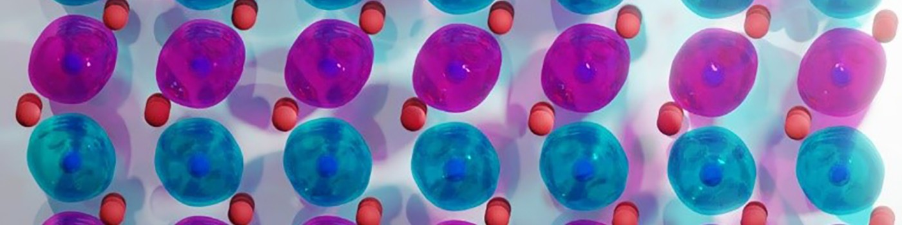

About
I'm fascinated by the potential of altermagnets (as shown in the image below) which are highly spin-active yet display no overall magnetic fields. I explore these unique materials with a vision to develop computing solutions that are denser, faster, and more energy-efficient.

CrSb crystal. The quantum mechanical 'clouds' of electron densities (cyan and magenta for opposite spins) are related to each other by rotating and mirroring them. Photo credits: Libor Šmejkal and Anna Birk Hellenes.
Highlights
Research Highlights
-
Prediction of giant magnetoresistance effects in altermagnets
-
Prediction of odd-parity-wave (p-wave) magnetism
-
Theory–experiment verification of altermagnetism
Awards
-
Wilhelm and Else Heraeus Dissertation Prize
-
Honorary M.Sc. Thesis Award
Invited Talks (selected)
-
Odd-parity-wave magnets
-
Altermagnets and Odd-parity-wave Magnets
-
Odd-parity-wave magnetism
-
Unconventional p-wave magnets
-
From altermagnets to p-wave magnets: electronic structure and spintronics applications
-
From spin symmetries to magnetoresistance effects in altermagnets
Education
-
Ph.D., Computational Condensed Matter Physics
-
M.Sc., Theoretical Condensed Matter Physics
-
B.Sc., Physics
Contact
Email
hellenes@fzu.cz
Affiliation
FZU – Institute of Physics of the Czech Academy of Sciences
Division of Solid State Physics
Department of Spintronics and Nanoelectronics
Address
Cukrovarnická 10/112
162 00 Prague 6
Czechia